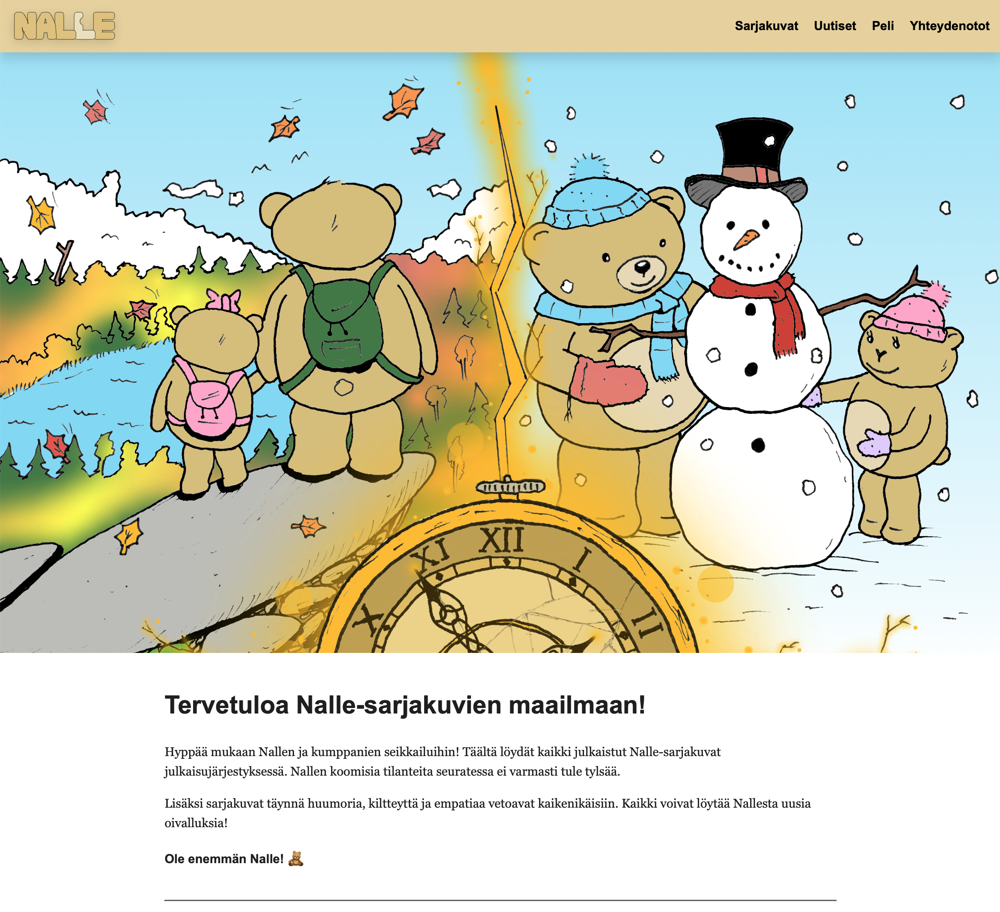
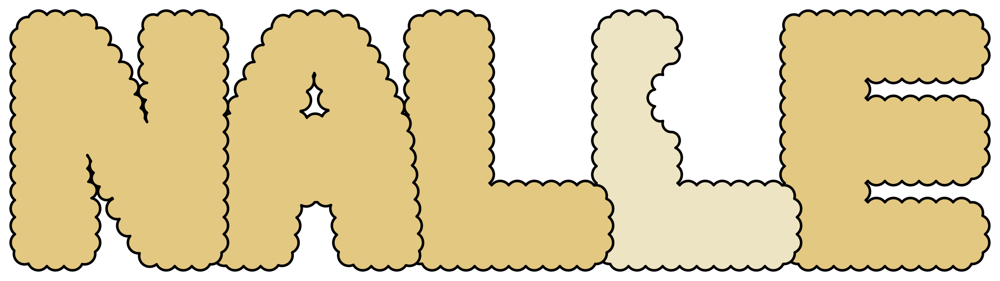
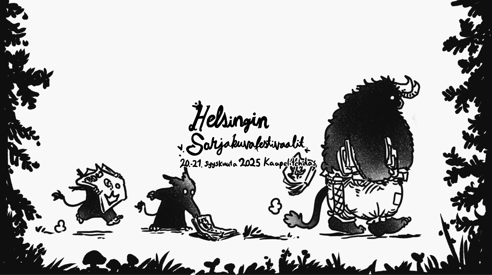
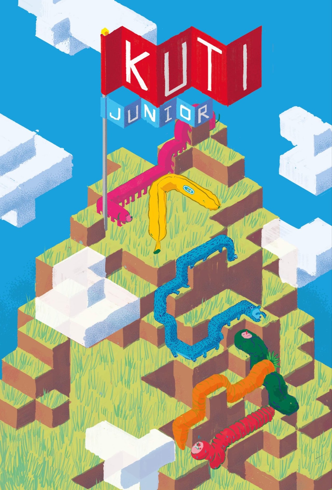
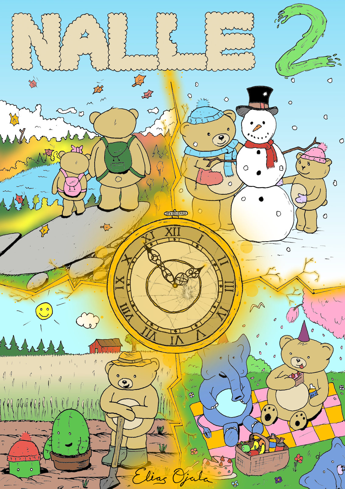
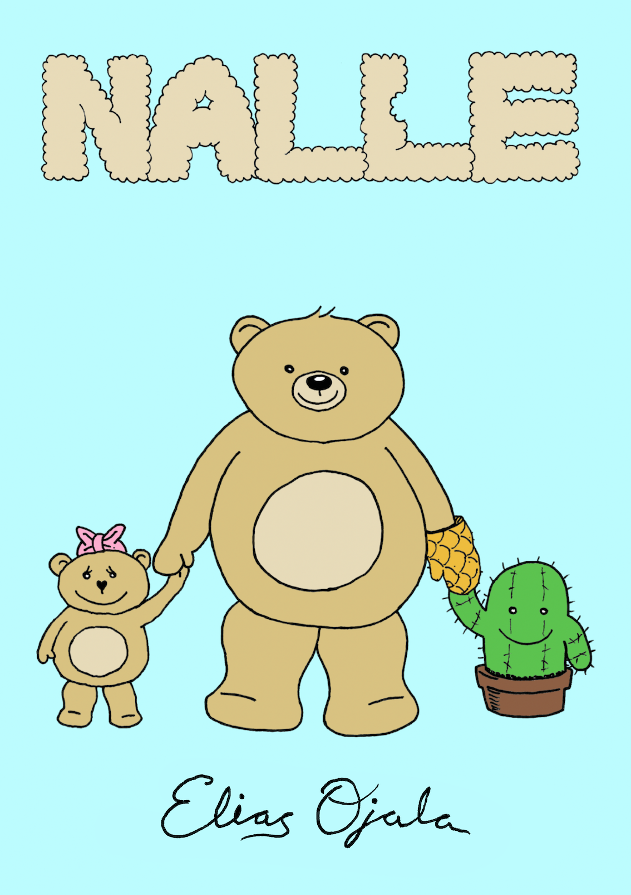

Nalle-sarjakuvien kotisivut ovat uudistuneet!
Nallen nettisivut on päivitetty uuteen ulkoasuun! Käy myös testaamassa uutta peliä ja selvitä ketä nallehahmoa muistutat eniten!


Nallen nettisivut on päivitetty uuteen ulkoasuun! Käy myös testaamassa uutta peliä ja selvitä ketä nallehahmoa muistutat eniten!

Nalle-sarjakuvia on myynnissä vuoden 2025 Helsingin sarjakuvafestivaalien Zine Festillä! Minut löytää lauantaina pöytäpaikalta 17.
20.–21.9.2025
Lauantai klo 11–20
Sunnuntai klo 11–18
Kaapelitehdas, Merikaapelihalli
Kaapeliaukio 3
00180 Helsinki
"Helsinki Zine Fest on osa Helsingin sarjakuvafestivaaleja ja toimii paikkana, jonne pienlehtien tekijät, lukijat ja muut vastavirtakulttuurista kiinnostuneet voivat kokoontua, tulla myymään teoksiaan ja tapaamaan muita samanhenkisiä ihmisiä."

Nalle seikkailee kesän 2025 Juniori Kuti -lehdessä muiden upeiden sarjakuvien ohella!
"Kuti on uuden sarjakuvan lehti, joka ilmestyy neljä kertaa vuodessa ja on jaossa paperisena ilmaisjakelulehtenä valikoiduissa gallerioissa, kahviloissa, ravintoloissa, levy- ja kirjakaupoissa sekä kirjastoissa 14 kaupungissa ympäri Suomea."

Nalle 2 albumi on nyt julkaistu! Käy lukemassa koko albumi sarjakuvat-sivulta.

Nalle 1 albumi on nyt julkaistu! Käy lukemassa koko albumi sarjakuvat-sivulta.